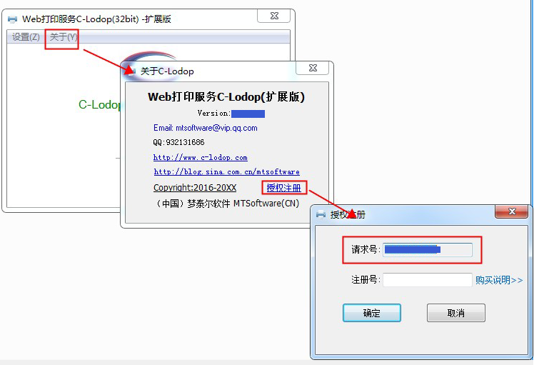

远程AO端桥模式
参考http://www.c-lodop.com/demolist/t1.html参考链接里的三种角色及使用方法。
图文详解AO打印（端桥模式），AO端桥模式 参考http://www.c-lodop.com/blogs/Blog014.html
云主机访问不了，端桥连不上
云主机上的c-lodop是否安装启动成功了，重启下集中打印云主机上的c-lodop试试。
图文详解AO打印（端桥模式） 参考http://www.c-lodop.com/blogs/Blog014.html 注意AO服务的默认端口是9200，测试和管理(访问)端口是8000(备用端口18000），服务器开启防火墙的话，要开通这三个端口访问权。
测试欢迎页面
访问下http://[C-Lodop服务所在主机ip或域名]:[C-Lodop端口]/c_aobridge 欢迎页面页面测试下。
访问下http://[C-Lodop服务所在主机ip或域名]:[C-Lodop端口]/c_aoprint 欢迎页面，查看下端桥是否在线，点预览试试
访问下http://[C-Lodop服务所在主机ip或域名]:[C-Lodop端口]/c_aobridge 测试某端桥下的其他打印机，点预览试试
云主机上的c-lodop总是卡死
服务器的各种维护界面尽量不要处于打开状态，避免卡死
例如AO服务器端管理界面不要处于打开状态。
AO服务器管理界面是否处于打开状态，一定要关闭
关闭管理维护界面后再测试下。
端桥模式注册号如何购买
参考http://www.c-lodop.com/demolist/t1.html 表格后面购买相关的一栏
关于购买梦泰尔软件授权的注意事项
http://www.c-lodop.com/Lodop_note.html
c-lodop注册号购买地址：
http://www.c-lodop.com/CLodopLic.html
角色1，不需要购买c-lodop云注册号
参考http://www.c-lodop.com/demolist/t1.html
参考链接里的三种场景，是哪种角色。
如果是客户端本地打印角色，客户端访问网站后在自己电脑连接的打印机上进行打印，是第一种角色，不需要购买c-lodop注册号。
怎样获取云主机请求号
二. 关于绑定机器硬件
C-Lodop云注册号绑定机器硬件信息，只能在授权的服务器上使用，在其他机器使用无效，C-Lodop云注册号根据“请求号”获得。
获取请求号方式：
1.C-Lodop启动主界面->关于->授权注册->请求号

2.打印服务所在机器，如果已安装并启动C-Lodop，访问该机器本地获取
：http://localhost:8000/c_mlicense
c-lodop注册号可以去水印吗
关于购买梦泰尔软件授权的注意事项
http://www.c-lodop.com/Lodop_note.html
当单独使用第二、三角色时，C-Lodop云注册号在解除个数限制的同时，也会去掉水印。